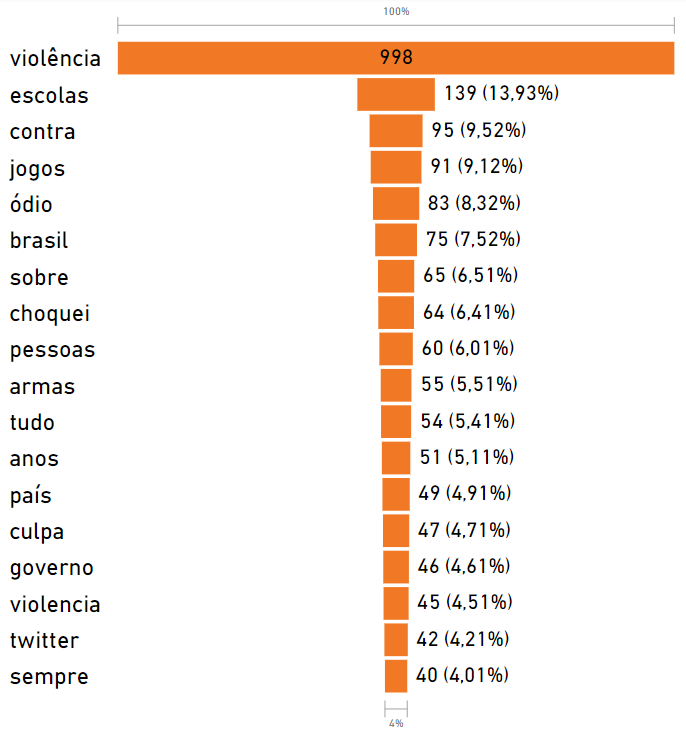
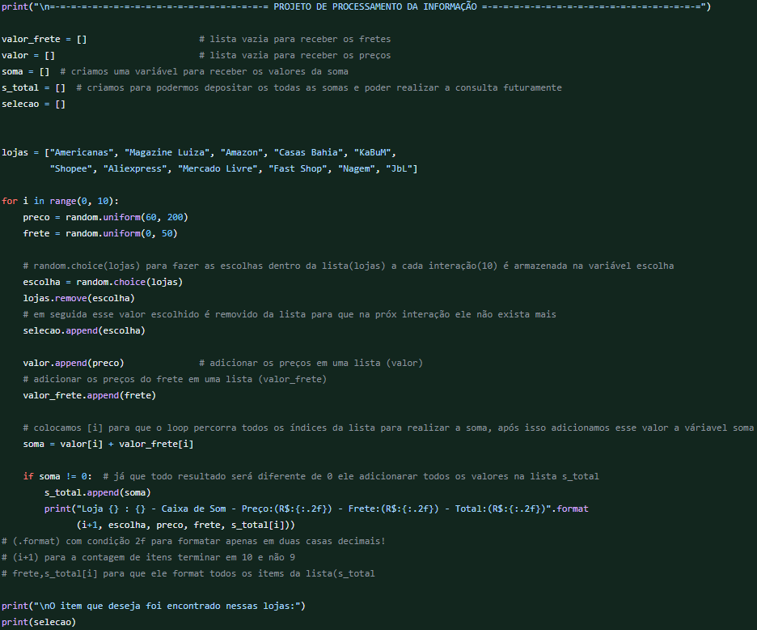
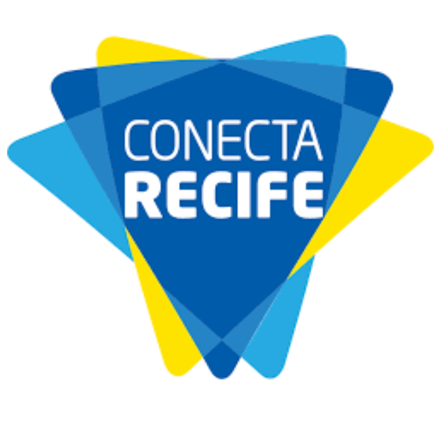

Sou aspirante a oficial da Reserva (R/2) do Exército, formado no curso de intendência do CPOR do Recife. E também discente da Universidade Federal de Pernambuco UFPE no curso de Gestão da Informação, atualmente no 5º período da faculdade. Desenvolvendo meu background em tecnologias de (SQL, Python, Big Data, Data Science) e negócios (Business Intelligence, BI e Data Analysis), atrelado aos conhecimentos de Gestão da Informação.
 Este artigo é fruto de um trabalho de conclusão da disciplina de Ética da informação do curso de Gestão da informação da Universidade Federal de Pernambuco — UPFE, construído por André Ribas e Ariene Oliveira. A pesquisa envolve a análise parcial dos resultados de um estudo comportamental realizado através dos usuários que frequentemente expressam suas opiniões sobre tópicos no (trending topics). A metodologia emprega revisão bibliográfica e raspagem de dados (web scraping) para coletar e observar os tweets dos usuários.
 O projeto foi concebido como parte da disciplina de Processamento da Informação e tem como objetivo simular um sistema comparativo de preços semelhante ao Buscapé. O objetivo é criar um ambiente em python onde diferentes lojas oferecem preços e fretes aleatórios para um produto específico, e ajudar os usuários a tomar decisões informadas ao comprar o produto.
 O programa Conecta Recife oferece Wi-Fi gratuito em toda a cidade, promovendo o acesso à internet. A análise dos dados revela um panorama sobre a distribuição da conectividade na cidade. Com base nesses dados, é possível identificar os locais que concentram mais pontos de internet gratuita, bem como os que podem necessitar de maior atenção. Isso não apenas ajuda a avaliar o sucesso do projeto, mas também permite tomar medidas para melhorar a acessibilidade à internet.